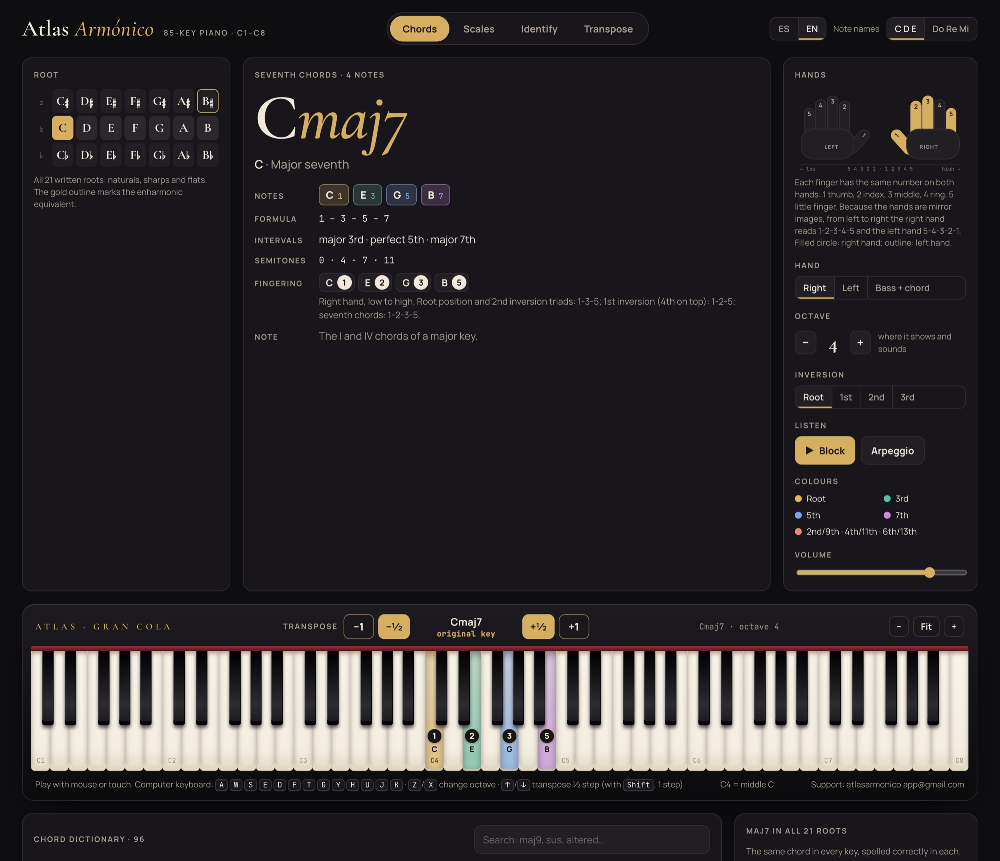
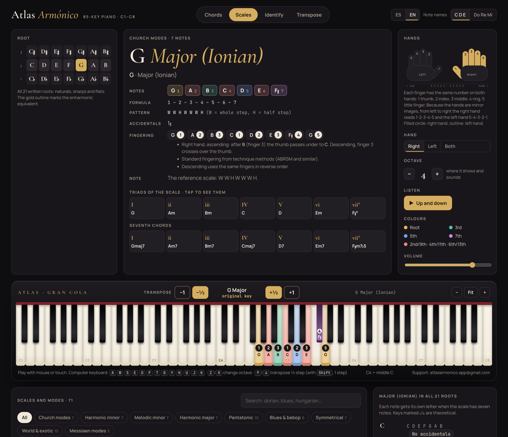
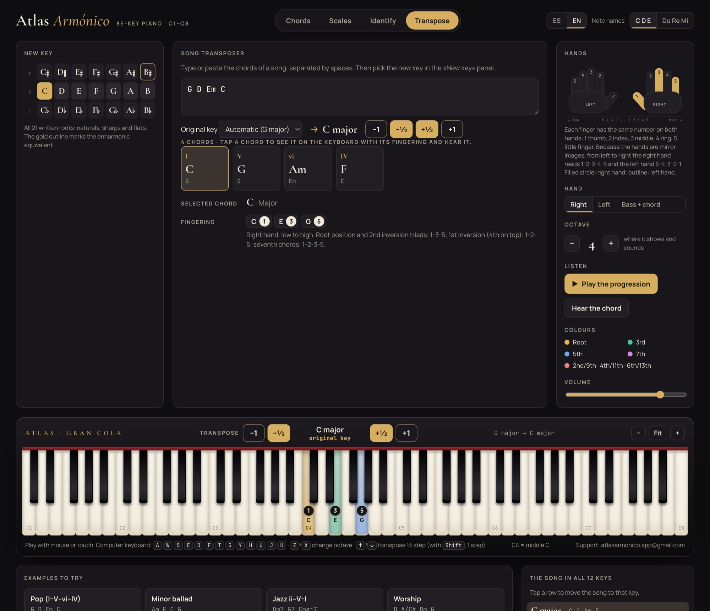

Explora 96 tipos de acordes y 71 escalas y modos en un piano interactivo de 7 octavas. Mira las notas y la digitación de ambas manos, escucha el resultado y transporta las progresiones de tus canciones a otro tono. Una referencia visual para estudiantes, profesores y músicos que acompañan.Explore 96 chord types and 71 scales and modes on an interactive 7-octave piano. See the notes and fingering for both hands, hear how they sound, and transpose your song progressions to another key. A visual reference for students, teachers and accompanying musicians.

Abre la app, elige un acorde y escucha sus notas. Después prueba una escala o pega una progresión para transportarla. La demostración se carga cuando decides abrirla.Open the app, choose a chord and hear its notes. Then try a scale or paste a progression to transpose it. The live demo loads when you choose to open it.
Prueba de la app completa: 10 consultas o 2 horas desde la primera apertura, lo que ocurra primero. La compra permite activarla en 2 equipos. Si ya agotaste la prueba, verás la opción de compra o activación.Full-app trial: 10 queries or 2 hours from the first opening, whichever comes first. A purchase activates 2 devices. If you have already used the trial, the app shows the purchase or activation options.
Cuatro clips cortos con la app real y su sonido: escalas con digitación, los tonos más raros, acordes hasta la 13ª y el transportador de canciones.Four short clips of the real app, with sound: scales with fingering, the strangest keys, chords up to 13ths and the song transposer.
Capturas reales de la app, sin retoques.Real screenshots of the app, untouched.


Pensado para estudiar: todo lo que ves en pantalla tiene nombre, fórmula y digitación.Built for practice: everything on screen has a name, a formula and a fingering.
Pega los acordes que viste en internet (G D Em C, Dm7 G7 Cmaj7, D/F♯ o en Do Re Mi), elige el nuevo tono y míralos en el teclado con su digitación. Detecta el tono original solo.Paste the chords you found online (G D Em C, Dm7 G7 Cmaj7, D/F♯ or in solfège), pick the new key and see them on the keyboard with fingering. It detects the original key for you.
Sextas, séptimas, novenas, oncenas, trecenas, dominantes alterados, sextas aumentadas, Tristán, Scriabin y voicings cuartales.Sixths, sevenths, ninths, elevenths, thirteenths, altered dominants, augmented sixths, Tristan, Scriabin and quartal voicings.
Modos griegos, menor armónica y melódica con sus modos, mayor armónica, pentatónicas, blues, bebop, simétricas, ragas y modos de Messiaen.Church modes, harmonic and melodic minor with their modes, harmonic major, pentatonics, blues, bebop, symmetrical scales, ragas and Messiaen modes.
Digitación estándar de los métodos de técnica en escalas mayores y menores, con un diagrama de manos que marca qué dedo toca cada tecla.Standard method fingerings for major and minor scales, with a hand diagram that shows which finger plays each key.
De C a C♭ y B♯: cada nota con su letra correcta, dobles alteraciones incluidas, y la lista del acorde en todas las tónicas.From C to C♭ and B♯: every note with its correct letter, double accidentals included, plus the chord listed in every key.
Siete octavas con las teclas negras colocadas como en un piano real, sonido de piano y teclado del ordenador para tocar.Seven octaves with black keys placed as on a real piano, piano sound, and computer-keyboard playing.
Toca unas teclas y te dice qué acorde es, con su inversión y todas sus lecturas posibles.Press some keys and it names the chord, with its inversion and every possible reading.
Para quien quiere entender lo que toca, no solo memorizarlo.For anyone who wants to understand what they play, not just memorise it.
| PruebaTrial | CompletaFull | |
|---|---|---|
| Los 96 acordes y las 71 escalasAll 96 chords and 71 scales | ✓ | ✓ |
| Digitación de ambas manos y diagramaFingering for both hands and diagram | ✓ | ✓ |
| Transportador de cancionesSong transposer | ✓ | ✓ |
| Las 21 tónicas e identificador de acordesAll 21 roots and chord identifier | ✓ | ✓ |
| UsoUse | 10 consultas o 2 h10 queries or 2 h | IlimitadosUnlimited |
| 3 bonos en PDF para imprimir3 printable PDF bonuses | — | ✓ |
| App de Windows y app web (Mac, iPad, Linux, celular), funciona sin internetWindows app and web app (Mac, iPad, Linux, phone), works offline | ✓ | ✓ |
| Activación en 2 equiposActivation on 2 devices | — | ✓ |
Pago único para usar Atlas Armónico en 2 equipos, con las actualizaciones de la versión 1.x incluidas. Los impuestos aplicables y el total en moneda local se muestran en Hotmart antes de pagar.One payment to use Atlas Armónico on 2 devices, including version 1.x updates. Applicable taxes and any local-currency total are shown at Hotmart checkout before payment.
Recibes software descargable y bonos digitales. El acceso se libera cuando Hotmart aprueba el pago.You receive downloadable software and digital bonuses. Access is released after Hotmart approves payment.
Hotmart envía las instrucciones al correo de la compra. En tu compra encuentras la guía de inicio, los archivos y los 3 bonos PDF. Los pagos pendientes de confirmación pueden tardar más.Hotmart emails the instructions to your purchase address. Your purchase contains the quick-start guide, files and 3 PDF bonuses. Payment methods awaiting confirmation can take longer.
Usa la versión web en tu navegador o descarga la aplicación para Windows o Mac. La versión web también funciona en iPad, Linux y celulares compatibles.Use the web version in your browser or download the Windows or Mac app. The web version also works on compatible iPad, Linux and mobile browsers.
Pulsa Activar e introduce el correo de la compra y el código de Hotmart que empieza por HP. Necesitas conexión para descargar y activar. Después de cargar la app y completar la activación, puedes usarla sin conexión.Click Activate and enter your purchase email and Hotmart code beginning with HP. Connect to download and activate. After the app has loaded and activation is complete, you can use it offline.
En Windows 10 y 11 con el programa (descargar), y en Mac, iPad, Linux y celulares con la app web en Chrome, Safari, Edge o Firefox, que también se puede instalar como app.On Windows 10 and 11 with the desktop app (download), and on Mac, iPad, Linux and phones with the web app in Chrome, Safari, Edge or Firefox, which can also be installed as an app.
Solo una vez, para activar tu compra. Después funciona sin conexión.Only once, to activate your purchase. After that it works offline.
Abres la app completa en el navegador o en Windows y haces 10 consultas (elegir un acorde, una escala, una tónica o transportar) durante máximo 2 horas, sin pagar ni registrarte. Después te pide comprarla.You open the full app in your browser or on Windows and make 10 queries (pick a chord, a scale, a root or transpose) within 2 hours, with no payment or sign-up. After that it asks you to buy.
En la app pulsa Activar y escribe el correo de tu compra y el código que empieza por HP (llega en el correo de Hotmart). Cada compra sirve en 2 equipos.In the app click Activate and enter your purchase email and the code that starts with HP (it is in the Hotmart email). Each purchase works on 2 devices.
No. Es un pago único.No. It is a one-time payment.
Las escalas mayores y menores usan la digitación estándar de los métodos de técnica. Para el resto, la app aplica las reglas clásicas: pulgar en teclas blancas, paso del pulgar tras el 3 o el 4, y un 4 por octava. Los acordes de 9ª a 13ª se reparten entre las dos manos, como en los métodos de piano moderno.Major and minor scales use the standard fingerings from technique methods. For the rest, the app applies the classic rules: thumb on white keys, thumb passing after 3 or 4, and one 4th finger per octave. Ninth to thirteenth chords are split between the hands, as in contemporary piano methods.
Dispones de 15 días para solicitarlo mediante los detalles de tu compra o el portal de reembolsos de Hotmart. Si necesitas ayuda con el acceso o la activación, escribe a atlasarmonico.app@gmail.com. Incluye el nombre del producto y describe el problema; no envíes contraseñas ni datos de tarjeta. Se mantienen los derechos obligatorios que correspondan a tu compra.You have 15 days to request a refund through your purchase details or Hotmart's refund portal. For access or activation help, email atlasarmonico.app@gmail.com. Include the product name and describe the issue; do not send passwords or card details. Mandatory rights applicable to your purchase remain available.